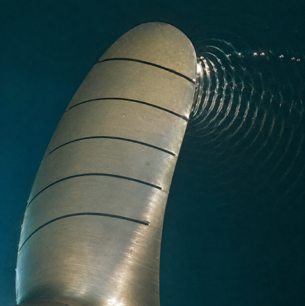

Two connected research themes, each built around model development and application studies.
Research animations and selected figures
01
Fluid-structure interaction (FSI)
Efficient models for coupled dynamics, applied to aeroelasticity and structural design.
1.1
Model development
1.1.1
FSI simulation with structural reduced-order modeling
Structural deformation in the modal-reduction study.
Structural reduced-order modeling projects fluid loads onto dominant structural modes and reconstructs deformation through modal superposition. This reduces the structural degrees of freedom in coupled simulations of flexible bodies, including hydrofoils interacting with cavitating flows.
Int. J. Multiph. Flow, 2025
1.1.2
FSI instability prediction with fluid reduced-order modeling
Selective frequency damping and system identification are combined to construct compact fluid reduced-order models. Coupling these models to structural equations enables rapid instability prediction and modal analysis, including non-uniform inflows through submodal superposition.
Phys. Fluids, 2022; J. Fluid Mech., 2024
1.1.3
Graph neural networks (GNN)
CFD and hypergraph prediction on a moving mesh.
Mesh-adaptive graph models enable prediction of unsteady flow and fluid-structure dynamics. Hypergraph representations support changing meshes and moving boundaries, providing fast surrogates for oscillating, rotating, and flexible structures.
Eng. Appl. Artif. Intell., 2026
1.2
Application studies
1.2.1
Galloping
Flow evolution around an oscillating cross-section.
The influence of fore-aft tapering on galloping onset is examined through numerical and experimental analysis. Simulations and wind-tunnel experiments show that a one-degree geometric change can alter instability in the studied configurations, linking cross-sectional design to fluid-to-structure energy transfer.
J. Fluid Mech., 2023; J. Fluids Struct., 2023
1.2.2
Transonic aeroelasticity
Transonic flow in the canard-main-wing aeroelasticity study.
The effects of forewings on transonic buffet and coupled structural motion are investigated. The study links forewing-induced flow changes to modulated buffet and amplified pitching vibration.
Influence of Forewings on Transonic Aeroelasticity: Modulated Buffet and Amplified Pitching Vibration. Cheng, Zhi; Jung, Jiyoung; Gu, Grace X.* J. Vib. Acoust., accepted (2026).
1.2.3
Topology design
Coupled mesh and deformation with an internal topology.
Internal structural topology is investigated as a means of regulating flow-structure energy transfer for passive aeroelastic control. High-fidelity FSI models connect structural architecture to deformation and flow-induced response.
Cheng, Zhi; Dowell, Earl H.; Gu, Grace X.* Internal topological design can regulate flow-structure energy transfer for passive aeroelastic control. Under review
1.2.4
Active morphing
External illustration: NASA MADCAT morphing wing. Credit: NASA / Kenneth Cheung.
The dynamics of morphing submodes in biological wing motion are compared, with particular attention to their superimposition. This work connects individual deformation modes to combined wing motion, informing the modeling of flexible and morphing wings.
Dynamical comparison and superimposition of morphing submodes in biological wing motion. Cheng, Zhi; Wei, ZiXiao; Gu, Grace X.* Phys. Rev. Fluids, accepted (2026).
02
Flow-induced noise
Predictive methods for sound generation and propagation, applied to rotating and marine systems.
2.1
Model development
2.1.1
Cavitation acoustic perturbation equations (CAPE)
Acoustic propagation illustration from the CAPE presentation.
Cavitation acoustic perturbation equations provide a framework for describing sound generation and propagation in two-phase flows. The formulation accounts for volumetric sources associated with cavitation dynamics, alongside flow and structural contributions.
Cavitation Acoustic Perturbation Equations: A Computational Framework for Source-Resolved Multiphase Hydroacoustics. Zhi Cheng*; Rui Gao; Rajeev K. Jaiman. Under review.
Acoustic perturbation formulation with a BPM source term.
The framework couples acoustic perturbation equations with the Brooks-Pope-Marcolini airfoil self-noise model and an actuator-line flow model. This framework predicts rotating-blade noise without requiring a blade-resolved flow mesh.
Renew. Energy, 2022
2.1.3
Vortex-particle noise prediction
Particle-based tracking of a developing propeller wake.
Lagrangian vortex-particle tracking links wake dynamics to acoustic models. This concentrates computation on the structures responsible for sound, supporting efficient propeller and ducted-propulsor noise prediction.
The ALM-BPM-APE framework is applied to predict wind-turbine sound generation, propagation, and directivity. The analysis connects rotor loading and turbulent wake dynamics to the acoustic field for noise-aware turbine design.
Renew. Energy, 2022; CSME 2021.
2.2.2
Propeller singing

Propeller singing is governed by hydroelasticity and cavitating vortex shedding.
The interaction between flexible-blade vibration and cavitation dynamics is examined to understand narrowband propeller singing. Coupled fluid-structure-acoustic analysis relates the tonal response to the frequencies and phase relationships of the underlying sources.
Int. J. Multiph. Flow, 2025; CSME 2024; OMAE 2024.
2.2.3
Integrated hull-propeller systems
Ducted-propeller flow visualization.
Source-level acoustic analysis is extended to coupled propeller, nozzle, and vessel configurations. The work examines how geometry and operating conditions modify cavitating wakes and radiated sound, guiding integrated design for quieter propulsion.
Phys. Fluids, 2025 · Editor’s Pick
2.2.4
Digital-twin control & sea trials
Research-vessel sea-trial footage.
Sea-trial noise measurements provide an experimental basis for evaluating marine propulsion models. Building on these tests, my planned digital-twin work will combine rapid prediction, operating data, and feedback control to manage vibration and underwater sound.
Sea-trial validation; digital-twin control is a research direction
Digital-twin control concept (planned work)Concept animation for future digital-twin control; not a completed closed-loop sea trial.